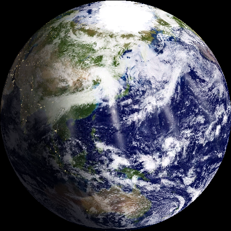
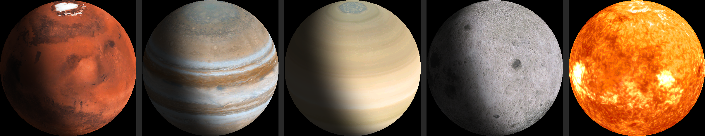

Device Output.


A standalone desk globe that shows Earth from space in real time—live day/night, NASA clouds, and city lights—on a 1.75" round AMOLED.


The Weather Globe is a standalone, internet-connected desk display built on an ESP32-S3 microcontroller. Utilizing a 1.75" round AMOLED screen, the device acts as a live window onto Earth and the solar system. Its primary feature is a real-time, sun-synchronous rendering of Earth, complete with accurate day/night shadow lines, live cloud cover downloaded daily from NASA satellites, and illuminated city lights on the night side.
Operating entirely on the device without the need for companion mobile apps or cloud accounts, it features a built-in captive portal for WiFi configuration and a web-based settings dashboard.
Calculates the real-time position of the sun to accurately drape a soft twilight terminator (day/night line) across the globe.
Automatically fetches and maps live cloud cover from NASA's VIIRS satellites, layering it over the base map.
Renders NASA "Black Marble" city lights exclusively on the shadowed hemisphere of the Earth.
Allows users to switch the view to any of 10 celestial bodies: Earth, Mercury, Venus, Mars, Jupiter, Saturn, Uranus, Neptune, the Moon, and the Sun.
On a user-defined schedule, the globe smoothly transitions to a full-screen, data-rich card displaying local time, date, temperature, "feels like" temperature, humidity, and wind speed.
Hosts a local web server (accessible via the device's IP) to adjust motion speed (true 24-hour rotation vs. smooth time-lapse), brightness, camera tilt, screen rotation, and weather card cadence.